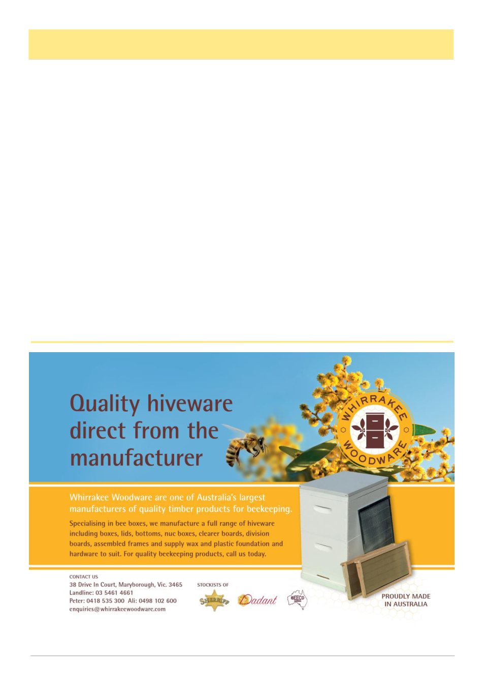

Yellow-legged Hornet, cont’d
June 2026
25
Australian beekeeping.
The lesson from New Zealand
New Zealand's response deserves close attention
from Australian beekeepers. It shows the value of pub-
lic reporting, decisive action, specialist advice, and us-
ing several tools at once rather than waiting for certain-
ty. It also shows how narrow the window can be. By
the time the first hornets were found, other queens and
nests already existed. Eradication may still succeed,
and everyone with an interest in pollinators should hope
that it does, but the incursion is a warning.
For Australian beekeepers, the practical message is
to not panic. It is familiarity. Learn the appearance of
the yellow-legged hornet. Learn the sort of nests it
builds. Notice unusual predation at hive entrances.
Report suspicious sightings immediately. At the same
time, keep learning the pests we cannot see from the
gate, especially Tropilaelaps. The next major exotic
threat to Australian bees may arrive as a conspicuous
black-and-yellow hunter, or as a tiny mite hidden under
brood cappings. We need to be ready for both.
References
1 Biosecurity New Zealand. Yellow-legged hornets
in Auckland. Ministry for Primary Industries, last re-
viewed 5 May 2026.
2 Monceau K, Bonnard O, Thiery D. Vespa velutina:
a new invasive predator of honeybees in Europe. Jour-
nal of Pest Science. 2014;87:1-16.
3 Laurino D et al. Vespa velutina: An alien driver of
honey bee colony losses. Diversity. 2020;12(1):5.
4 Australian Government Department of Agriculture,
Fisheries and Forestry. National Priority List of Exotic
Environmental Pests, Weeds and Diseases. Updated 7
January 2025.
5 Laurino D et al. Vespa velutina: An alien driver of
honey bee colony losses. Diversity. 2020;12(1):5.
6 Tan K et al. Bee-hawking by the wasp Vespa velu-
tina on the honeybees Apis cerana and A. mellifera.
Naturwissenschaften. 2007;94:469-472.
7 Requier F et al. Predation of the invasive Asian
hornet affects foraging activity and survival probability
of honey bees. Journal of Pest Science. 2019;92:567-
578.
8 Monceau K et al. Native prey and invasive preda-
tor patterns of foraging activity: the case of Vespa velu-
tina and honeybees. PLoS ONE. 2013;8(6):e66492.
9 Biosecurity New Zealand. Look out for hornets
fact sheet. Ministry for Primary Industries, 2025.
10 NSW Department of Primary Industries. Tropi-
laelaps mites. 2011.
11 Plant Health Australia. Tropilaelaps mites fact
sheet. 2024.
(Continued from page 24)